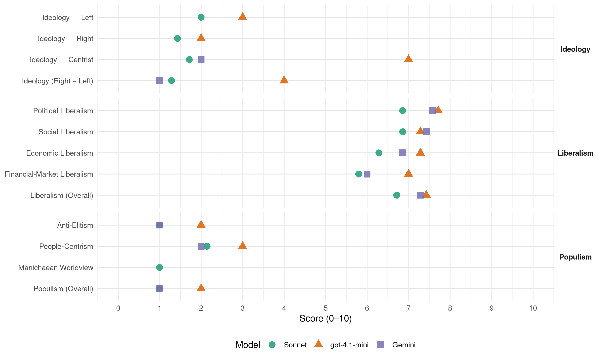

CD&V (Belgium, 2014)
manifesto_id 21521_201405
Get full text: This site shows derived annotations and short verbatim quotes only. The full manifesto text is © Manifesto Project / WZB — obtain it via manifesto-project.wzb.eu using the manifesto_id above.
Headline scores
| Dimension | Sonnet | gpt-4.1-mini | Gemini |
|---|---|---|---|
| Populism (Overall) | 1.0 | 2.0 | 1.0 |
| Anti-Elitism | 1.0 | 2.0 | 1.0 |
| People-Centrism | 2.1 | 3.0 | 2.0 |
| Manichaean Worldview | 1.0 | – | – |
| Ideology (Right − Left) | 1.3 | 4.0 | 1.0 |
| Liberalism (Overall) | 6.7 | 7.4 | 7.3 |
| Political Liberalism | 6.9 | 7.7 | 7.6 |
| Social Liberalism | 6.9 | 7.3 | 7.4 |
| Economic Liberalism | 6.3 | 7.3 | 6.9 |
| Financial-Market Liberalism | 5.8 | 7.0 | 6.0 |
Evidence per dimension
Economic Liberalism
Gemini · score 8.0 · verified · chunk 1
“vrije markt heeft ecologische en sociale”
waarderen werken en ondernemen, we moedigen het zeer aan. De vrije markt heeft ecologische en sociale correcties nodig. Maar die moeten
Gemini · score 7.0 · verified · chunk 2
“in een geliberaliseerde markt politieke stabiliteit”
België heeft nood aan een energiepact… Dat energiepact moet in een geliberaliseerde markt politieke stabiliteit garanderen voor essentiële investeringen
Gemini · score 6.0 · verified · chunk 3
“ondernemerschap in de kleinhandel”
Ondernemerschap in de kleinhandel, horeca en lokale diensten en vrije beroepen
Gemini · score 7.0 · verified · chunk 4
“binnen een economische marktwerking”
onafhankelijke boekhandel en wijkbioscoop, die binnen een economische marktwerking, een grote meerwaarde bieden
Gemini · score 7.0 · verified · chunk 5
“ondernemende partner van de overheid”
vrije beroepen… We willen hun rol als ondernemende partner van de overheid in de interacties met burgers en bedrijven valoriseren
Gemini · score 6.0 · verified · chunk 6
“voorbereid op de liberalisering van het binnenlands reizigersvervoer”
financieel gezond overheidsbedrijf, voorbereid op de liberalisering van het binnenlands reizigersvervoer die Europa voor ogen heeft. Ook De
Gemini · score 7.0 · verified · chunk 7
“zonder aan concurrentievervalsing te doen”
Er moet plaats zijn voor sociale tewerkstelling, zonder aan concurrentievervalsing te doen. Uitgangspunt is een kostenefficiënte recuperatie van materialen;
gpt-4.1-mini · score 8.0 · verified · chunk 1
“werken loont, dat ondernemen loont”
Wij zeggen: wie meer werkt, moet netto meer overhouden. We verhogen het deel van het inkomen waar u geen belasting op betaalt.
gpt-4.1-mini · score 8.0 · verified · chunk 2
“CD&V steunt het Europese voorstel om een gemeenschappelijke geconsolideerde basis voor de vennootschapsbelasting in te voeren”
CD&V steunt het Europese voorstel om een gemeenschappelijke geconsolideerde basis voor de vennootschapsbelasting in te voeren. Deze gemeenschappelijke geconsolideerde heffingsgrondslag zal de vennootschapsbelasting in de EU transparanter maken, administratief vereenvoudigen en zorgen voor een betere allocatie van de productiefactoren. Hij zal Europa aantrekkelijker maken voor investeerders.
gpt-4.1-mini · score 7.0 · verified · chunk 3
“De Vlaamse woonbonus is hét instrument voor de ondersteuning van eigendomsverwerving”
De overheveling van de woonbonus na de 6de staatshervorming biedt een uitgelezen kans op een integraal Vlaams woonbeleid. De Vlaamse woonbonus is hét instrument voor de ondersteuning van eigendomsverwerving. CD&V zegt duidelijk dat er ook voor nieuwbouw een woonbonus zal zijn.
gpt-4.1-mini · score 7.0 · verified · chunk 4
“gunstig ondernemersklimaat en gunstige tewerkstellingsperspectieven”
Het beleid inzake economische migratie van derdelanders baseren op een evenwichtige benadering van economische en humanitaire aspecten. In het belang van de ondernemingen en de betrokken werknemers moet het beleid voldoen aan de principes van duidelijkheid, snelheid en rechtszekerheid. Het is van belang dat grensoverschrijdende tewerkstelling vanuit het Vlaamse beleid op een doordachte en evenwichtige manier wordt ondersteund, in functie van een gunstig ondernemersklimaat en gunstige tewerkstellingsperspectieven.
gpt-4.1-mini · score 7.0 · verified · chunk 5
“De toeristische sector is in Vlaanderen en Brussel de op één na grootste economische groeisector”
De toeristische sector is in Vlaanderen en Brussel de op één na grootste economische groeisector. Zij staat in voor ruim 5% van de bruto toegevoegde waarde. Het gaat bovendien om een arbeidsintensieve sector met niet-delokaliseerbare jobs die goed zijn voor 6 à 7 % van de totale tewerkstelling in ons land.
gpt-4.1-mini · score 7.0 · verified · chunk 6
“marktwerking en aftopping van nevenkosten”
Een goede marktwerking en aftopping van nevenkosten moet de totaalprijs betaalbaar houden. Energiearmoede bekampen we aan de bron door structurele energiebesparingen via extra steun en doelgerichte acties.
gpt-4.1-mini · score 7.0 · verified · chunk 7
“kringloopeconomie stimuleren met een voortdurend geactualiseerd Vlaams Materialenprogramma”
De kringloopeconomie stimuleren met een voortdurend geactualiseerd Vlaams Materialenprogramma als instrument. Nog meer bouwafval, biomassa, metalen e.d. kunnen nuttig hergebruikt worden.
Sonnet · score 7.0 · verified · chunk 1
“vrije markt heeft ecologische en sociale correcties nodig”
We waarderen werken en ondernemen, we moedigen het zeer aan. De vrije markt heeft ecologische en sociale correcties nodig. Maar die moeten groeivriendelijk zijn.
Sonnet · score 7.0 · verified · chunk 2
“gemeenschappelijke geconsolideerde basis voor de vennootschapsbelasting”
CD&V steunt het Europese voorstel om een gemeenschappelijke geconsolideerde basis voor de vennootschapsbelasting in te voeren.
Sonnet · score 6.0 · verified · chunk 3
“lasten op arbeid verlagen”
Daarom wil CD&V: de lasten op arbeid verlagen de overuren van vast personeel in de horeca forfaitiseren.
Sonnet · score 6.0 · verified · chunk 4
“ondernemerschap stimuleren, met een leerlijn”
Ondernemingszin en ondernemerschap stimuleren, met een leerlijn van kleuter- tot hoger onderwijs en door partners van de school in de klas te halen om ondernemerschap te bevorderen
Sonnet · score 6.0 · verified · chunk 5
“harmonisering van nationale wetgevingen die concurrentieverstorend”
CD&V wil in Europa werken aan de harmonisering van nationale wetgevingen die concurrentieverstorend of remmend werken voor de toeristische industrie
Sonnet · score 6.0 · verified · chunk 6
“liberalisering van het binnenlands reizigersvervoer”
De NMBS de opdracht geven zich om te vormen tot een klantvriendelijk, kwalitatief en financieel gezond overheidsbedrijf, voorbereid op de liberalisering van het binnenlands reizigersvervoer die Europa voor ogen heeft.
Sonnet · score 6.0 · verified · chunk 7
“kostenefficiënte recuperatie van materialen”
Er moet plaats zijn voor sociale tewerkstelling, zonder aan concurrentievervalsing te doen. Uitgangspunt is een kostenefficiënte recuperatie van materialen
Financial-Market Liberalism
Gemini · score 8.0 · verified · chunk 1
“vertrouwen op de financiële markten”
Onze inspanningen hebben het vertrouwen op de financiële markten teruggebracht. De rente op langlopend overheidspapier
Gemini · score 7.0 · verified · chunk 4
“financieringsmogelijkheden aanreikt en een langetermijnaanpak”
onderwijsactoren en financiële experts die oplossingen en financieringsmogelijkheden aanreikt en een langetermijnaanpak mee vorm geeft.
Gemini · score 3.0 · verified · chunk 7
“zoals een financiële transactietaks”
Nieuwe financiële hefbomen zullen noodzakelijk zijn om een sociale en duurzame wereld na te streven. Daarom moet gezocht worden naar alternatieve financiering, zoals een financiële transactietaks;
gpt-4.1-mini · score 7.0 · verified · chunk 1
“bankenwet begeeft zich voor een aantal belangrijke bijkomende punten”
Met de financiele crisis is in Europa een Bankenunie tot stand gekomen. De Belgische bankenwet neemt zowel de definitieve als de maatregelen die in het laatste stadium van het Europees wetgevend proces zijn op.
gpt-4.1-mini · score 7.0 · verified · chunk 2
“Europa levert op dit vlak al goed werk”
We leven in een geglobaliseerde wereld en fraude stopt niet aan de grenzen van België. Ook een goede gegevensuitwisseling met derde landen is dus nodig. Europa levert op dit vlak al goed werk. Het opvoeren van de Europese coördinatie van de strijd tegen belastingfraude, kan nog verbetering opleveren. CD&V ondersteunt de op til zijnde uitbreiding van het toepassingsgebied van de spaarrichtlijn.
Sonnet · score 7.0 · verified · chunk 1
“bescherming van de spaarders én flexibiliteit in beheer”
Bij het omzetten van de Europese richtlijnen en het uitwerken van bijkomende maatregelen ging alle aandacht naar het evenwicht tussen maatregelen ter bescherming van de spaarders én flexibiliteit in beheer.
Sonnet · score 6.0 · verified · chunk 2
“strijd tegen het witwassen van geld”
Vervolgens is er de strijd tegen het witwassen van geld. Hier gaat het doorgaans om grote bedragen van meestal criminele oorsprong.
Sonnet · score 5.0 · verified · chunk 3
“prijs-volume contracten voor geneesmiddelen”
We beheersen de kosten voor gezondheidszorg door maatregelen te nemen die zowel een impact hebben op de prijs (bijvoorbeeld prijs-volume contracten voor geneesmiddelen en hulpmiddelen, de aanbesteding voor terugbetaalbaar medisch materiaal
Sonnet · score 6.0 · verified · chunk 6
“hypotheekleningen ook heel wat strenger behandeld”
Sinds de vastgoed- en bankencrisis worden hypotheekleningen ook heel wat strenger behandeld. Door de 6de staatshervorming wordt het woon- en huurbeleid integraal een Vlaamse bevoegdheid.
Sonnet · score 5.0 · verified · chunk 7
“een financiële transactietaks”
Nieuwe financiële hefbomen zullen noodzakelijk zijn om een sociale en duurzame wereld na te streven. Daarom moet gezocht worden naar alternatieve financiering, zoals een financiële transactietaks
Political Liberalism
Gemini · score 7.0 · verified · chunk 1
“hervorming van de Raad van State”
omgevingsvergunning is ingevoerd. Ook de hervorming van de Raad van State draagt bij tot het inkorten van procedures.
Gemini · score 7.0 · verified · chunk 2
“duidelijke voorrang van het algemeen belang”
kleinere investeringsprojecten; duidelijke voorrang van het algemeen belang boven het individueel belang. Dat principe
Gemini · score 8.0 · verified · chunk 3
“essentiële vrijheden zoals democratie”
We houden ook vast aan essentiële vrijheden zoals democratie, aan het recht op een geweten
Gemini · score 8.0 · verified · chunk 4
“bescherming van onze democratische instellingen”
identiteit en verdienen de bescherming van onze democratische instellingen. Elke vorm van radicalisering
Gemini · score 8.0 · verified · chunk 5
“respect voor ieders rechten en vrijheden”
zorgen voor een veilige, rechtvaardige samenleving en respect voor ieders rechten en vrijheden. Het verhogen van het vertrouwen van de
Gemini · score 7.0 · verified · chunk 6
“respect voor de vrijheid van godsdienst”
Geen verbod op ritueel slachten, vanuit het respect voor de vrijheid van godsdienst. Wel zijn we voorstander van een absoluut
Gemini · score 8.0 · verified · chunk 7
“democratie, rechtsstaat, fundamentele vrijheden”
Arabische revoluties: Ons buitenlands beleid moet actief inspelen op de belangen en waarden die een rol spelen in de ontwikkelingen en in de manier waarop we met deze ontwikkelingen omgaan: menselijke waardigheid, democratie, rechtsstaat, fundamentele vrijheden en mensenrechten zijn maatstaven die ons beleid bepalen.
gpt-4.1-mini · score 8.0 · verified · chunk 1
“democratie, rechten, verkiezingen, parlement”
Een basis van rechtszekerheid en rechtvaardigheid. En bovenal op een fundament van sociaal weefsel, een netwerk van vrijwilligers.
gpt-4.1-mini · score 7.0 · verified · chunk 2
“CD&V wil een transparante fiscale wetgeving”
Het is belangrijk fiscale fraude preventief aan te pakken door gelegenheden tot fraude uit te sluiten. Een heldere en eenvoudige fiscale wetgeving is een perfect hulpmiddel. Die zorgt er niet alleen voor dat de belastingbetaler het systeem begrijpt - wat minder administratieve lasten voor iedereen met zich brengt - maar zorgt er ook voor dat er geen achterpoortjes zijn die nadien met reparatiewetgeving gesloten moeten worden. CD&V wil een transparante fiscale wetgeving, zowel op federaal als gewestelijk vlak.
gpt-4.1-mini · score 8.0 · verified · chunk 3
“essentiële vrijheden zoals democratie, aan het recht op een geweten, aan het recht om in alle vrijheid de eigen godsdienst te beleven, het recht vrij de eigen mening te uiten”
Nooit mogen we uit het oog verliezen dat vluchtelingen mensen zijn waarmee op een menswaardige wijze moet worden omgegaan. We houden ook vast aan essentiële vrijheden zoals democratie, aan het recht op een geweten, aan het recht om in alle vrijheid de eigen godsdienst te beleven, het recht vrij de eigen mening te uiten, enz. We willen die mensenrechten ook als rode draad gebruiken in ons handelsbeleid en in ons buitenlands beleid, ook als we weten dat sommige landen mensenrechtenkritiek niet waarderen, ook als kritiek op het niet respecteren van mensenrechten onze handelsrelaties op korte termijn kan bemoeilijken.
gpt-4.1-mini · score 8.0 · verified · chunk 4
“de democratische instellingen”
We erkennen de waarde die zij hebben voor onze samenleving. Zij moeten zich bijgevolg kunnen manifesteren in organisaties en instellingen met een eigen identiteit en verdienen de bescherming van onze democratische instellingen. Elke vorm van radicalisering wordt tegengegaan en aangepakt; Het opvoeden van jongeren tot zelfbewuste, kritische en weerbare mensen tot doel van het onderwijs maken.
gpt-4.1-mini · score 8.0 · verified · chunk 5
“Het vertrouwen van de burger in Justitie is te laag”
Het vertrouwen van de burger in Justitie is te laag. Justitie vervult nochtans een cruciale rol in de samenleving. Justitie moet zorgen voor een veilige, rechtvaardige samenleving en respect voor ieders rechten en vrijheden.
gpt-4.1-mini · score 7.0 · verified · chunk 6
“democratische basisprincipes”
Duurzame ontwikkeling is een van de christendemocratische basisprincipes, gebaseerd op het beginsel van het rentmeesterschap. De kerngedachte is dat we de wereld niet bezitten, maar slechts in beheer hebben gekregen.
gpt-4.1-mini · score 8.0 · verified · chunk 7
“de omgevingsvergunning integreert leefmilieu en stedenbouw in één procedure”
De omgevingsvergunning operationeel uitrollen begin 2015. Ze integreert leefmilieu en stedenbouw in één procedure en één beslissing. Burgers en ondernemen krijgen sneller duidelijkheid en rechtszekerheid over hun plannen: Eén geïntegreerd advies.
Sonnet · score 7.0 · verified · chunk 1
“het federale parlement de laatste wetteksten goedkeurde”
Op 19 december 2013 keurde het federale parlement de laatste wetteksten goed. Ruim 20 miljard euro gaat over naar de gemeenschappen en gewesten.
Sonnet · score 7.0 · verified · chunk 2
“vrijheid van onderwijs”
We zijn terecht trots op onze vrijheid van onderwijs die het grote engagement van schoolteams aanwakkert en verklaart.
Sonnet · score 7.0 · verified · chunk 3
“democratie, aan het recht op een geweten”
We houden ook vast aan essentiële vrijheden zoals democratie, aan het recht op een geweten, aan het recht om in alle vrijheid de eigen godsdienst te beleven, het recht vrij de eigen mening te uiten
Sonnet · score 7.0 · verified · chunk 4
“bescherming van onze democratische instellingen”
Zij moeten zich bijgevolg kunnen manifesteren in organisaties en instellingen met een eigen identiteit en verdienen de bescherming van onze democratische instellingen. Elke vorm van radicalisering wordt tegengegaan
Sonnet · score 7.0 · verified · chunk 5
“vertrouwen herwinnen”
Justitie absolute prioriteit geven en zo het vertrouwen herwinnen. De federale en Vlaamse regeringen krijgen in komende legislatuur de sleutels
Sonnet · score 6.0 · verified · chunk 6
“grondwettelijke en europeesrechtelijke mogelijkheden”
Het beleid van de Vlaamse regering moet verder gezet worden – uiteraard binnen de grondwettelijke en europeesrechtelijke mogelijkheden – met als uitgangspunt het respect voor het territorialiteitsbeginsel
Sonnet · score 7.0 · verified · chunk 7
“democratie, rechtsstaat, fundamentele vrijheden en mensenrechten”
menselijke waardigheid, democratie, rechtsstaat, fundamentele vrijheden en mensenrechten zijn maatstaven die ons beleid bepalen.
Liberalism (Overall)
Gemini · score 8.0 · verified · chunk 1
“vrije markt heeft ecologische en sociale”
waarderen werken en ondernemen, we moedigen het zeer aan. De vrije markt heeft ecologische en sociale correcties nodig. Maar die moeten
Gemini · score 7.0 · verified · chunk 2
“in een geliberaliseerde markt politieke stabiliteit”
België heeft nood aan een energiepact… Dat energiepact moet in een geliberaliseerde markt politieke stabiliteit garanderen voor essentiële investeringen
Gemini · score 7.0 · verified · chunk 3
“essentiële vrijheden zoals democratie”
We houden ook vast aan essentiële vrijheden zoals democratie, aan het recht op een geweten
Gemini · score 8.0 · verified · chunk 4
“bescherming van onze democratische instellingen”
identiteit en verdienen de bescherming van onze democratische instellingen. Elke vorm van radicalisering
Gemini · score 8.0 · verified · chunk 5
“respect voor ieders rechten en vrijheden”
zorgen voor een veilige, rechtvaardige samenleving en respect voor ieders rechten en vrijheden. Het verhogen van het vertrouwen van de
Gemini · score 6.0 · verified · chunk 6
“voorbereid op de liberalisering van het binnenlands reizigersvervoer”
financieel gezond overheidsbedrijf, voorbereid op de liberalisering van het binnenlands reizigersvervoer die Europa voor ogen heeft. Ook De
Gemini · score 7.0 · verified · chunk 7
“democratie, rechtsstaat, fundamentele vrijheden”
Arabische revoluties: Ons buitenlands beleid moet actief inspelen op de belangen en waarden die een rol spelen in de ontwikkelingen en in de manier waarop we met deze ontwikkelingen omgaan: menselijke waardigheid, democratie, rechtsstaat, fundamentele vrijheden en mensenrechten zijn maatstaven die ons beleid bepalen.
gpt-4.1-mini · score 8.0 · verified · chunk 1
“werken loont, dat ondernemen loont”
Wij zeggen: wie meer werkt, moet netto meer overhouden. We verhogen het deel van het inkomen waar u geen belasting op betaalt.
gpt-4.1-mini · score 7.0 · verified · chunk 2
“CD&V wil een transparante fiscale wetgeving”
CD&V steunt het Europese voorstel om een gemeenschappelijke geconsolideerde basis voor de vennootschapsbelasting in te voeren. Deze gemeenschappelijke geconsolideerde heffingsgrondslag zal de vennootschapsbelasting in de EU transparanter maken, administratief vereenvoudigen en zorgen voor een betere allocatie van de productiefactoren. Hij zal Europa aantrekkelijker maken voor investeerders.
gpt-4.1-mini · score 7.0 · verified · chunk 3
“We houden ook vast aan essentiële vrijheden zoals democratie, aan het recht op een geweten, aan het recht om in alle vrijheid de eigen godsdienst te beleven, het recht vrij de eigen mening te uiten, enz.”
Nooit mogen we uit het oog verliezen dat vluchtelingen mensen zijn waarmee op een menswaardige wijze moet worden omgegaan. We houden ook vast aan essentiële vrijheden zoals democratie, aan het recht op een geweten, aan het recht om in alle vrijheid de eigen godsdienst te beleven, het recht vrij de eigen mening te uiten, enz. We willen die mensenrechten ook als rode draad gebruiken in ons handelsbeleid en in ons buitenlands beleid, ook als we weten dat sommige landen mensenrechtenkritiek niet waarderen, ook als kritiek op het niet respecteren van mensenrechten onze handelsrelaties op korte termijn kan bemoeilijken.
gpt-4.1-mini · score 8.0 · verified · chunk 4
“de democratische instellingen”
We erkennen de waarde die zij hebben voor onze samenleving. Zij moeten zich bijgevolg kunnen manifesteren in organisaties en instellingen met een eigen identiteit en verdienen de bescherming van onze democratische instellingen. Elke vorm van radicalisering wordt tegengegaan en aangepakt; Het opvoeden van jongeren tot zelfbewuste, kritische en weerbare mensen tot doel van het onderwijs maken.
gpt-4.1-mini · score 7.0 · verified · chunk 5
“Het vertrouwen van de burger in Justitie is te laag”
Het vertrouwen van de burger in Justitie is te laag. Justitie vervult nochtans een cruciale rol in de samenleving. Justitie moet zorgen voor een veilige, rechtvaardige samenleving en respect voor ieders rechten en vrijheden.
gpt-4.1-mini · score 7.0 · verified · chunk 6
“Duurzame ontwikkeling is een van de christendemocratische basisprincipes”
Duurzame ontwikkeling is een van de christendemocratische basisprincipes, gebaseerd op het beginsel van het rentmeesterschap. De kerngedachte is dat we de wereld niet bezitten, maar slechts in beheer hebben gekregen.
gpt-4.1-mini · score 8.0 · verified · chunk 7
“de omgevingsvergunning integreert leefmilieu en stedenbouw in één procedure”
De omgevingsvergunning operationeel uitrollen begin 2015. Ze integreert leefmilieu en stedenbouw in één procedure en één beslissing. Burgers en ondernemen krijgen sneller duidelijkheid en rechtszekerheid over hun plannen: Eén geïntegreerd advies.
Sonnet · score 7.0 · verified · chunk 1
“vrije markt heeft ecologische en sociale correcties nodig”
We waarderen werken en ondernemen, we moedigen het zeer aan. De vrije markt heeft ecologische en sociale correcties nodig. Maar die moeten groeivriendelijk zijn.
Sonnet · score 7.0 · verified · chunk 2
“transparante fiscale wetgeving”
CD&V wil een transparante fiscale wetgeving, zowel op federaal als gewestelijk vlak.
Sonnet · score 7.0 · verified · chunk 3
“essentiële vrijheden zoals democratie”
We houden ook vast aan essentiële vrijheden zoals democratie, aan het recht op een geweten, aan het recht om in alle vrijheid de eigen godsdienst te beleven
Sonnet · score 7.0 · verified · chunk 4
“doorgedreven strijd tegen discriminatie”
Dit vereist een inspanning van alle betrokkenen (o.m. in het onderwijs en op de arbeidsmarkt), een doorgedreven strijd tegen discriminatie en het bevorderen van tolerantie en wederzijds respect.
Sonnet · score 7.0 · verified · chunk 5
“rechtszekerheid bieden in alle situaties”
CD&V wilt zorgen voor een juridisch dat kader dat rechtszekerheid biedt in alle situaties. Alle gezinnen verdienen onze steun
Sonnet · score 6.0 · verified · chunk 6
“liberalisering van het binnenlands reizigersvervoer”
De NMBS de opdracht geven zich om te vormen tot een klantvriendelijk, kwalitatief en financieel gezond overheidsbedrijf, voorbereid op de liberalisering van het binnenlands reizigersvervoer die Europa voor ogen heeft.
Sonnet · score 6.0 · verified · chunk 7
“democratie, rechtsstaat, fundamentele vrijheden en mensenrechten”
menselijke waardigheid, democratie, rechtsstaat, fundamentele vrijheden en mensenrechten zijn maatstaven die ons beleid bepalen.
Anti-Elitism
Gemini · score 1.0 · verified · chunk 1
“verloren hebben laten gaan”
duidelijk gemaakt welke kansen de paars(-groene) regeringen vanaf 2000 verloren hebben laten gaan om de begroting op orde te houden.
gpt-4.1-mini · score 2.0 · verified · chunk 1
“We hebben onderhandeld, zwaar onderhandeld”
We zijn niét aan de kant gaan staan. We hebben onderhandeld, zwaar onderhandeld. En dit is vandaag het prachtige resultaat dat we hebben behaald.
Sonnet · score 1.0 · verified · chunk 1
“paars-groen de vergrijzing in die periode onvoldoende heeft voorbereid”
De Nationale Bank concludeerde bij herhaling dat paars-groen de vergrijzing in die periode onvoldoende heeft voorbereid. In plaats van een stevig overschot
Sonnet · score 1.0 · verified · chunk 2
“agressieve tax planning”
Hij zal Europa aantrekkelijker maken voor investeerders. Ten slotte is hij een instrument tegen al te agressieve tax planning.
Sonnet · score 1.0 · verified · chunk 3
“commerciële drijfveren in de (gezondheids)zorg niet de bovenhand mogen halen”
Een solidaire gezondheidszorg betekent dat wie gezond is, bijdraagt voor wie ziek is en dat wie het financieel beter heeft, bijdraagt voor wie het moeilijk heeft. Het wil ook zeggen dat commerciële drijfveren in de (gezondheids)zorg niet de bovenhand mogen halen.
Sonnet · score 1.0 · verified · chunk 4
“De subsidiariteit ten volle laten spelen”
CD&V wil… De subsidiariteit ten volle laten spelen en de school teruggeven aan leerlingen, leerkrachten en directie. We willen deregulering
Sonnet · score 1.0 · verified · chunk 5
“vertrouwen van de burger in Justitie is te laag”
Het vertrouwen van de burger in Justitie is te laag. Justitie vervult nochtans een cruciale rol in de samenleving.
Sonnet · score 1.0 · mixed · chunk 6
“een klantvriendelijk, kwalitatief en financieel gezond overheidsbedrijf”
De NMBS de opdracht geven zich om te vormen tot een klantvriendelijk, kwalitatief en financieel gezond overheidsbedrijf, voorbereid op de liberalisering
Sonnet · score 1.0 · verified · chunk 7
“marktmacht van de landbouwbedrijven versterken”
CD&V wil maximaal gebruik maken van de nieuwe mogelijkheden om producentenorganisaties op te richten; De marktmacht van de landbouwbedrijven versterken omdat landbouwbedrijven door hun beperkte schaal weinig impact hebben op het marktgebeuren.
Ideology — Centrist
Gemini · score 2.0 · verified · chunk 1
“dichtst bij de mensen staat”
elk beleid op het niveau brengen dat het dichtst bij de mensen staat. Voor werk, welzijn, mobiliteit
gpt-4.1-mini · score 7.0 · verified · chunk 1
“positief confederaal model legt– conform het subsidariteitsbeginsel – het zwaartepunt bij de deelstaten”
Dat vloeit voort uit onze keuze voor een positief confederaal model. Het positief confederaal model legt– conform het subsidariteitsbeginsel – het zwaartepunt bij de deelstaten.
Sonnet · score 2.0 · verified · chunk 1
“zekerheid en vertrouwen geven”
Met ons plan willen we zekerheid en vertrouwen geven. En tegelijk ook de ambitie en de motivatie om het elke dag weer beter te doen.
Sonnet · score 1.0 · verified · chunk 2
“breed gedragen zijn”
We zijn overtuigd dat maatregelen maar tot duurzaam resultaat kunnen leiden als ze breed gedragen zijn.
Sonnet · score 1.0 · verified · chunk 3
“CD&V gelooft in haar kracht”
CD&V gelooft in haar kracht. Wij zijn ervan overtuigd dat Vlaanderen op een kruispunt staat.
Sonnet · score 2.0 · verified · chunk 4
“een correct en rechtvaardig asiel- en migratiebeleid”
Het uitgangspunt blijft hetzelfde: een correct en rechtvaardig asiel- en migratiebeleid met snelle, duidelijke en kwaliteitsvolle procedures
Sonnet · score 2.0 · verified · chunk 5
“behoeften, noden en verwachtingen van burgers”
Dat de behoeften, noden en verwachtingen van burgers, bedrijven en verenigingen ten aanzien van de overheid steeds het uitgangspunt zijn.
Sonnet · score 2.0 · verified · chunk 6
“Duurzame ontwikkeling is een verantwoordelijkheid van iedereen”
Sustainable deals tussen overheden, middenveldorganisaties en ondernemingen. Duurzame ontwikkeling is immers een verantwoordelijkheid van iedereen.
Sonnet · score 2.0 · verified · chunk 7
“Iedereen mee op de kar”
CD&V wil… Iedereen mee op de kar. De uitdagingen blijven groot genoeg om de aandacht voor ons leefmilieu niet te laten verslappen.
Ideology — Left
gpt-4.1-mini · score 3.0 · verified · chunk 1
“sociale solidariteit”
Het economische én het sociale, twee communicerende vaten. Met ons aan het roer: welvaart, ja, voluit, maar niet zonder welzijn, niet zonder sociale solidariteit.
Sonnet · score 2.0 · verified · chunk 1
“Asociale maatregelen zijn niet aan CD&V besteed”
Efficiëntiewinsten zijn zeker haalbaar en zelfs noodzakelijk in de sociale zekerheid, maar ze mogen niet leiden tot een tweedeling van onze samenleving. Asociale maatregelen zijn niet aan CD&V besteed.
Sonnet · score 2.0 · verified · chunk 2
“solidair zorgsysteem voor alle lagen en groepen”
Het uitgangspunt is een solidair zorgsysteem voor alle lagen en groepen van de bevolking.
Sonnet · score 2.0 · verified · chunk 3
“solidair zorgsysteem voor alle lagen en groepen”
Het uitgangspunt is een solidair zorgsysteem voor alle lagen en groepen van de bevolking. Een solidaire gezondheidszorg betekent dat wie gezond is, bijdraagt voor wie ziek is
Sonnet · score 2.0 · verified · chunk 4
“Het leefloon stapsgewijs verhogen tot de Europese armoededrempel”
CD&V wil… Dat de tegemoetkomingen voor personen met een handicap niet enkel een minimale bestaanszekerheid waarborgen… Het leefloon stapsgewijs verhogen tot de Europese armoededrempel.
Sonnet · score 2.0 · verified · chunk 5
“kwetsbare doelgroepen moeten voldoende mediatoegang hebben”
Ook kwetsbare doelgroepen moeten voldoende mediatoegang hebben en mediageletterd zijn.
Sonnet · score 2.0 · verified · chunk 6
“sociaal rechtvaardige duurzaamheid”
CD&V vraagt bijzondere aandacht voor sociaal rechtvaardige duurzaamheid. Duurzame ontwikkeling wordt immers nog te vaak door een leefmilieubril bekeken
Sonnet · score 2.0 · verified · chunk 7
“sociale clausules te integreren in het aankoopbeleid”
Stadsbesturen geven sociale economie een volwaardige plaats in het beleid door sociale clausules te integreren in het aankoopbeleid en lokale behoeften van inwoners te verbinden met het aanbod van de sociale economie.
Ideology (Right − Left)
Gemini · score 1.0 · verified · chunk 1
“dichtst bij de mensen staat”
elk beleid op het niveau brengen dat het dichtst bij de mensen staat. Voor werk, welzijn, mobiliteit
gpt-4.1-mini · score 4.0 · verified · chunk 1
“sociale solidariteit”
Het economische én het sociale, twee communicerende vaten. Met ons aan het roer: welvaart, ja, voluit, maar niet zonder welzijn, niet zonder sociale solidariteit.
Sonnet · score 1.0 · verified · chunk 1
“paars-groen de vergrijzing in die periode onvoldoende heeft voorbereid”
De Nationale Bank concludeerde bij herhaling dat paars-groen de vergrijzing in die periode onvoldoende heeft voorbereid.
Sonnet · score 1.0 · verified · chunk 2
“solidair zorgsysteem voor alle lagen en groepen”
Het uitgangspunt is een solidair zorgsysteem voor alle lagen en groepen van de bevolking.
Sonnet · score 1.0 · verified · chunk 3
“solidair zorgsysteem voor alle lagen en groepen”
Het uitgangspunt is een solidair zorgsysteem voor alle lagen en groepen van de bevolking.
Sonnet · score 2.0 · verified · chunk 4
“Wij allemaal vormen de samenleving”
Wij allemaal vormen de samenleving: jong en oud, man en vrouw, hoogopgeleid en minder hoogopgeleid, autochtoon en allochtoon
Sonnet · score 1.0 · verified · chunk 5
“iedereen kan deelnemen aan de maatschappij”
opdat iedereen kan deelnemen aan de maatschappij, ongeacht inkomen en woonplaats.
Sonnet · score 2.0 · verified · chunk 6
“sociaal rechtvaardige duurzaamheid”
CD&V vraagt bijzondere aandacht voor sociaal rechtvaardige duurzaamheid. Duurzame ontwikkeling wordt immers nog te vaak door een leefmilieubril bekeken
Sonnet · score 1.0 · verified · chunk 7
“Iedereen mee op de kar”
CD&V wil… Iedereen mee op de kar. De uitdagingen blijven groot genoeg om de aandacht voor ons leefmilieu niet te laten verslappen.
Ideology — Right
gpt-4.1-mini · score 2.0 · verified · chunk 1
“Vlaanderen blijft onverkort haar gemeenschapsbevoegdheden in Brussel uitoefenen”
Vlaanderen blijft onverkort haar gemeenschapsbevoegdheden in Brussel uitoefenen en streeft naar samenwerking met het Brussels Hoofdstedelijk Gewest.
Sonnet · score 1.0 · verified · chunk 1
“veiligheid, asiel en migratie en justitie”
gaat over een kordaat en rechtvaardig beleid over veiligheid, asiel en migratie en justitie.
Sonnet · score 1.0 · verified · chunk 2
“taaldrempel op school”
We verlagen de taaldrempel op school door een goede kennis van het Nederlands te verwezenlijken bij alle kinderen.
Sonnet · score 1.0 · verified · chunk 3
“wonen in eigen streek ondersteunen”
Mensen blijven vaak graag in de omgeving wonen die ze kennen. Wij willen dat wonen in eigen streek ondersteunen want in een aantal regio’s in Vlaanderen is de druk op de woningmarkt groot als gevolg van migraties
Sonnet · score 2.0 · verified · chunk 4
“Kennis van het Nederlands blijft voor CD&V essentieel”
Kennis van het Nederlands blijft voor CD&V essentieel voor een volwaardige deelname aan het sociaal-economische leven in Vlaanderen.
Sonnet · score 2.0 · verified · chunk 5
“Nederlandstalig karakter van de Vlaamse Rand”
een gecoördineerd en inclusief beleid om het Nederlandstalig karakter van de Vlaamse Rand te versterken.
Sonnet · score 2.0 · verified · chunk 6
“het Nederlandstalig karakter van de Vlaamse Rand”
Een gecoördineerd en inclusief beleid om het Nederlandstalig karakter van de Vlaamse Rand te versterken.
Sonnet · score 1.0 · verified · chunk 7
“misbruik te maken van ons sociaal systeem”
Zij die echter naar hier komen door de regels te omzeilen of om misbruik te maken van ons sociaal systeem, zullen kordaat worden aangepakt.
Manichaean Worldview
Sonnet · score 1.0 · verified · chunk 1
“erfenis van paars een structureel begrotingstekort”
In plaats van een stevig overschot op de begroting, was de erfenis van paars een structureel begrotingstekort van 1,4 procent van ons BBP.
Sonnet · score 1.0 · verified · chunk 2
“Fiscale fraude ondermijnt het volledige systeem”
Fiscale fraude ondermijnt het volledige systeem. Het is belangrijk fiscale fraude preventief aan te pakken
Sonnet · score 1.0 · verified · chunk 3
“armoede bestrijden heeft met geld of meer geld te maken”
In een welvarende regio als Vlaanderen valt armoede niet te tolereren. Het is iets om te bestrijden en dat is wat CD&V zo krachtig mogelijk doet. Zeker, armoede bestrijden heeft met geld of meer geld te maken, maar ook met het wegnemen van drempels
Sonnet · score 1.0 · verified · chunk 4
“Wij kiezen uitdrukkelijk niet voor polarisatie”
CD&V wil mensen bij elkaar brengen en met elkaar verbinden. Wij kiezen uitdrukkelijk niet voor polarisatie. Dat is de enige manier om een warme, respectvolle samenleving op te bouwen
Sonnet · score 1.0 · verified · chunk 5
“Criminaliteit, hoe klein ook, mag nooit als ‘normaal’ worden beschouwd”
Criminaliteit, hoe klein ook, mag nooit als ‘normaal’ worden beschouwd. Justitie mag de feiten niet achterna hollen
Sonnet · score 1.0 · verified · chunk 7
“Zij die echter naar hier komen door de regels te omzeilen”
Nieuwkomers en oudkomers steunen bij hun integratie. Zij die echter naar hier komen door de regels te omzeilen of om misbruik te maken van ons sociaal systeem, zullen kordaat worden aangepakt.
People-Centrism
Gemini · score 2.0 · verified · chunk 1
“dichtst bij de mensen staat”
elk beleid op het niveau brengen dat het dichtst bij de mensen staat. Voor werk, welzijn, mobiliteit
gpt-4.1-mini · score 3.0 · verified · chunk 1
“mensen weten in welk Vlaanderen ze morgen wakker worden”
… ervaring en visie voor nodig, daar is een partij met een plan voor nodig, zodat mensen weten in welk Vlaanderen ze morgen wakker worden.
Sonnet · score 3.0 · verified · chunk 1
“mensen op zoek zijn naar zekerheid”
Uit onze talrijke contacten met bedrijven, organisaties en met de mensen op straat hebben we goed begrepen dat mensen op zoek zijn naar zekerheid.
Sonnet · score 2.0 · verified · chunk 2
“iedereen bijdraagt in verhouding tot zijn draagkracht”
Een rechtvaardig belastingsysteem betekent dat iedereen bijdraagt in verhouding tot zijn draagkracht.
Sonnet · score 2.0 · verified · chunk 3
“een solidair zorgsysteem voor alle lagen en groepen van de bevolking”
Het uitgangspunt is een solidair zorgsysteem voor alle lagen en groepen van de bevolking. Een solidaire gezondheidszorg betekent dat wie gezond is, bijdraagt voor wie ziek is
Sonnet · score 2.0 · verified · chunk 4
“Wij allemaal vormen de samenleving”
Wij allemaal vormen de samenleving: jong en oud, man en vrouw, hoogopgeleid en minder hoogopgeleid, autochtoon en allochtoon
Sonnet · score 2.0 · verified · chunk 5
“iedereen kan deelnemen aan de maatschappij”
opdat iedereen kan deelnemen aan de maatschappij, ongeacht inkomen en woonplaats.
Sonnet · score 2.0 · verified · chunk 6
“een zaak zijn van en voor iedereen”
Milieu- en natuurbescherming moeten een zaak zijn van en voor iedereen, en niet van de overheid alleen.
Sonnet · score 2.0 · verified · chunk 7
“Iedereen mee op de kar”
CD&V wil… Iedereen mee op de kar. De uitdagingen blijven groot genoeg om de aandacht voor ons leefmilieu niet te laten verslappen.
Populism (Overall)
Gemini · score 1.0 · verified · chunk 1
“verloren hebben laten gaan”
duidelijk gemaakt welke kansen de paars(-groene) regeringen vanaf 2000 verloren hebben laten gaan om de begroting op orde te houden.
gpt-4.1-mini · score 2.0 · verified · chunk 1
“We hebben onderhandeld, zwaar onderhandeld”
We zijn niét aan de kant gaan staan. We hebben onderhandeld, zwaar onderhandeld. En dit is vandaag het prachtige resultaat dat we hebben behaald.
Sonnet · score 1.0 · verified · chunk 1
“paars-groen de vergrijzing in die periode onvoldoende heeft voorbereid”
De Nationale Bank concludeerde bij herhaling dat paars-groen de vergrijzing in die periode onvoldoende heeft voorbereid.
Sonnet · score 1.0 · verified · chunk 2
“iedereen bijdraagt in verhouding tot zijn draagkracht”
Een rechtvaardig belastingsysteem betekent dat iedereen bijdraagt in verhouding tot zijn draagkracht.
Sonnet · score 1.0 · verified · chunk 3
“commerciële drijfveren in de (gezondheids)zorg niet de bovenhand mogen halen”
Een solidaire gezondheidszorg betekent dat wie gezond is, bijdraagt voor wie ziek is en dat wie het financieel beter heeft, bijdraagt voor wie het moeilijk heeft. Het wil ook zeggen dat commerciële drijfveren in de (gezondheids)zorg niet de bovenhand mogen halen.
Sonnet · score 1.0 · verified · chunk 4
“Wij kiezen uitdrukkelijk niet voor polarisatie”
CD&V wil mensen bij elkaar brengen en met elkaar verbinden. Wij kiezen uitdrukkelijk niet voor polarisatie.
Sonnet · score 1.0 · verified · chunk 5
“vertrouwen van de burger in Justitie is te laag”
Het vertrouwen van de burger in Justitie is te laag. Justitie vervult nochtans een cruciale rol in de samenleving.
Sonnet · score 1.0 · mixed · chunk 6
“een zaak zijn van en voor iedereen”
Milieu- en natuurbescherming moeten een zaak zijn van en voor iedereen, en niet van de overheid alleen.
Sonnet · score 1.0 · verified · chunk 7
“Iedereen mee op de kar”
CD&V wil… Iedereen mee op de kar. De uitdagingen blijven groot genoeg om de aandacht voor ons leefmilieu niet te laten verslappen.
Social Liberalism